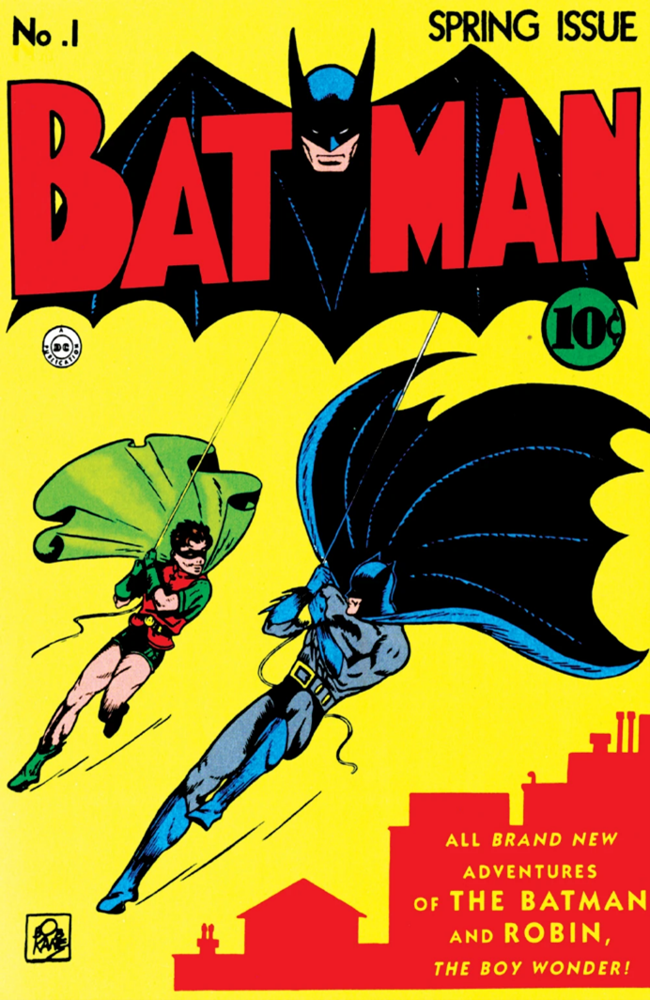

Batman es un personaje creado a través de las historias cómicas de Detective Comics, conocido ahora como DC comics fue creado en 1939 por los estadounidenses Bob Kane y Bill Finger. Apareció por primera vez en la historia titulada «El caso del sindicato químico» de la revista Detective Comics N.º 27, lanzada por la editorial National Publications el 30 de marzo de 1939.
En 1939, Bob Kane conceptualizó un personaje al que llamó “The Bat-Man”. Su diseño original incluía un antifaz, alas de murciélago y una polera roja sin guantes.
Sin embargo, antes de presentar su idea, acudió a un escritor colaborador: Bill Finger.
Bill Finger sugirió cambios significativos que transformaron por completo a Batman:
Reemplazar el antifaz por una capucha.
Proporcionarle una capa en lugar de alas.
Eliminar el brillo y los colores, brindándole un aura oscura e intrigante.
Estas modificaciones dieron lugar al Batman que todos conocemos hoy en día.
Bill Finger no solo refinó el diseño, sino que también aportó a la historia y el universo de Batman:
Creó elementos icónicos como el Bat-móvil, la Bat-cueva y la ciudad de Gotham.
Desarrolló personajes como el Joker, Catwoman, Riddler y Robin.
Incluso el origen de Batman basado en la tragedia (la muerte de los padres de Bruce Wayne) fue una idea suya.
A pesar de su contribución vital, Bill Finger vivió en la pobreza y no recibió reconocimiento público como co-creador hasta el estreno de la película “Batman v Superman: Dawn of Justice”.
Bob Kane, en varias ocasiones, refutó la participación de Finger en el desarrollo de la obra, atribuyéndose todo el crédito
En resumen, Bill Finger fue el auténtico héroe anónimo detrás de Batman, y su creatividad y visión transformaron al Caballero Oscuro en el legendario superhéroe que conocemos hoy
Laprimera Versión de Batman creada por Bob Kane mostraba un personaje con un traje rojo, calzones negros y un antifaz simple. Este diseño fue antes de que Bill Finger hiciera sus sugerencias que llevaron al icónico traje gris y negro con capa y capucha que conocemos hoy.
Bill Finger sugirió cambios significativos que transformaron por completo a Batman:
Reemplazar el antifaz por una capucha.
Proporcionarle una capa en lugar de alas.
Eliminar el brillo y los colores, brindándole un aura oscura e intrigante.
Estas modificaciones dieron lugar al Batman que todos conocemos hoy
El multimillonario filántropo, Thomas Wayne, su esposa, Martha junto a su hijo de 8 años, Bruce Wayne, estaban saliendo de un cine una noche cuando se dirigieron hacia Park Row. De repente, un matón llamado Joe Chill armado con una pistola se acercó hacia ellos desde las sombras para robar el collar de perlas que Martha llevaba. Con Bruce viendo todo, Chill disparó y mató a Thomas Wayne a sangre fría cuando este protegió a su esposa y luego Martha también fue asesinada mientras gritaba por ayuda. Bruce quedó severamente traumatizado por la muerte de sus padres. Ya nunca más sería el mismo. Después de ser criado por su sabio y leal mayordomo Alfred Pennyworth, Bruce heredó la gran fortuna de su familia, así también la compañía de su padre, Wayne Enterprises. Una noche, de pie ante las tumbas de sus padres, Bruce les hizo un solemne juramento de combatir el crimen en todos sus aspectos, haciendo justicia por su propia mano.
A pesar de la seguridad fiscal, la felicidad eludió a Bruce. Bruce fue consolado por la Dr. Leslie Thompkins, quien le ayudó a llorar a sus padres y a encontrar un propósito en la vida.
A los catorce años, Bruce comenzó un viaje de doce años por todo el mundo en busca de expertos en muchos campos de combate, entrenándose mental y físicamente. Desde el punto de vista académico, estudió en Cambridge (Inglaterra), la Sorbona en Francia, y otras famosas universidades europeas. Un francés llamado Henri Ducard le enseñó cómo cazar y perseguir a una persona, un ninja llamado Kirigi le enseñó el sigilo, un bosquimano africano lo entrenó en el arte de la caza, y los monjes de Nepal le enseñaron la curación.
Bruce volvió a Ciudad Gótica, donde se convirtió en un justiciero. Pero a pesar de todas sus habilidades afinadas, sabía que algo le faltaba. Bruce quería que los delincuentes fueran "muy supersticiosos y cobardes", y con el fin de liberar a su ciudad del mal, tuvo que convertirse en un símbolo tan aterrador que le permitiera infundir el miedo en los corazones de los criminales.
Una noche, en el estudio de su padre, un gran murciélago pasó a través de la ventana. Bruce vio esto como un presagio y recordó su miedo hacia los murciélagos cuando era niño. Entonces supo que ese iba a ser su símbolo, el Murciélago lo ayudaría a infundir terror en los bajos fondos de Gótica. Haciendo uso de su riqueza, Bruce diseñó un traje y todo el equipo complementario, comenzando así una doble vida: durante el día, él sería el playboy multimillonario y hombre de negocios, Bruce Wayne; de noche, sería el Caballero de Noche, Batman.

Esta es la portada del primer comic de Batman que se publicó en 1939 y su logo de título Bat-Man.